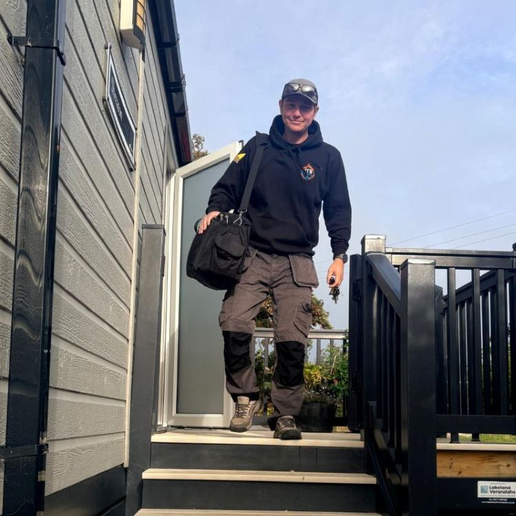

ABOUT JTS LPG SERVICES.
Specialist LPG gas services for static caravans, holiday homes, lodges, caravan parks and domestic LPG properties.
SPECIALIST LPG SERVICES FOR CARAVAN, LEISURE & DOMESTIC PROPERTIES.
JTS LPG Services was established to provide reliable, straightforward and professional LPG gas services for holiday-home owners, caravan parks and LPG customers.
The business specialises in the caravan and leisure sector, where LPG systems, appliances and site requirements can differ significantly from those found in standard mains-gas properties.
Our work covers routine safety and maintenance, repairs and installations, new caravan connections and seasonal services such as winterisation, alongside ongoing support for caravan parks and multiple units.
LPG GAS SERVICES FOR CARAVANS, HOLIDAY HOMES & PARKS.
From annual compliance and preventative servicing to breakdowns and new installations, JTS LPG Services provides practical support throughout the life of an LPG system.
LPG Gas Safety + Annual Service Package
Combine a comprehensive LPG Gas Safety Inspection and Certificate with the annual service of one LPG appliance during the same visit for £130, saving £40 compared with booking them separately.
LPG Gas Safety Inspection & Certificate
A thorough inspection of the complete LPG system, including tightness testing for gas leaks and checks of appliances, ventilation, flues, regulators and associated gas equipment. A digital Gas Safety Certificate is provided on satisfactory completion, giving owners peace of mind that the installation has been properly checked.
LPG Boiler & Appliance Servicing
Annual servicing for boilers, water heaters, gas fires and cookers, including appliances commonly used throughout the caravan and leisure industry.
LPG Breakdowns, Fault Finding & Repairs
Diagnosis and repair of boiler faults, appliance problems, gas-pressure issues, regulators, supply faults and other LPG problems.
LPG Boiler Replacement & Installation
Replacement and installation of older, unreliable or uneconomical-to-repair LPG boilers, with the new appliance tested and commissioned on completion.
Caravan Connections & Commissioning
LPG connection, installation testing, appliance commissioning and certification for newly sited caravans, holiday homes and lodges.
Winterisation & Drain Down
A thorough compressed-air drain down to help protect caravans from frozen pipes, burst fittings and frost damage while unoccupied over winter. Includes the hot and cold water system, boiler and pipework, plus antifreeze protection where required.
Caravan Park & Multiple-Unit LPG Work
Gas safety inspections, servicing, repairs, connections and ongoing LPG maintenance for caravan parks, holiday parks and multiple units.

THE ENGINEER BEHIND JTS LPG SERVICES.
Jack set up JTS LPG Services after years of working with LPG, with particular experience in the caravan, holiday-home and leisure sectors.
Today, customers can deal directly with Jack from the first enquiry through to completion of the work. That direct contact has helped the business build strong relationships with private owners, park operators and repeat customers.
Clear communication, reliable attendance and clear explanations are important parts of how JTS LPG Services operates, alongside carrying out the gas work itself.
Read customer reviews
QUALIFIED FOR
LPG GAS WORK.
JTS LPG Services is fully qualified, Gas Safe registered and insured for LPG gas work, with registered competencies covering the appliances and installations the business works on.
Gas Safe registration No. 958399. Current registration details and individual competencies can be checked directly through the official Gas Safe Register.
Verify on the Gas Safe RegisterRelevant categories cover LPG appliance, heating and cooking work.
MET1 covers appropriate gas meter installation, exchange and associated safety checks.
ANGLESEY & NORTH WALES.
Anglesey is the main service area for JTS LPG Services, with selected work also available in Bangor and other parts of North Wales depending on the type and size of the job.
Ask About Your LocationCOMMON QUESTIONS ABOUT OUR LPG WORK.
Useful information about the properties, customers and areas JTS LPG Services works with.
01 What does JTS LPG Services specialise in?
JTS LPG Services specialises in LPG gas work for static caravans, holiday homes, lodges and the caravan and leisure sector, alongside appropriate work in domestic LPG properties.
Services include gas safety inspections, annual appliance servicing, fault finding, repairs, boiler replacement, LPG supply equipment and new caravan connections.
02 Does JTS LPG Services work with caravan and holiday parks?
Yes. JTS LPG Services works with individual holiday-home owners as well as caravan parks, holiday parks and leisure businesses.
Multiple gas safety inspections, annual servicing, repairs, connections and ongoing LPG maintenance can be arranged for several units at the same site.
03 Do you only work on static caravans?
No. Static caravans are an important part of the business, but JTS LPG Services also works with holiday homes, lodges, caravan and holiday parks and domestic LPG properties.
04 Which areas does JTS LPG Services cover?
The main service area is Anglesey, with LPG gas safety, servicing, repairs, installations and caravan LPG work available across the island.
Selected work in Bangor and elsewhere in North Wales is also available depending on the type and size of the job.
05 Can JTS LPG Services connect a newly sited caravan or lodge?
Yes. New caravan connection work can include LPG supply connection, testing, appliance commissioning and the appropriate Gas Safety Certificate.
Associated waste plumbing for newly sited caravans, holiday homes and lodges can also be included as part of the complete connection package.
NEED LPG WORK ON ANGLESEY OR IN NORTH WALES?
Gas safety, annual servicing, breakdown repairs, boiler replacement, caravan connections and multi-unit LPG work for caravans, holiday homes, parks and LPG properties.